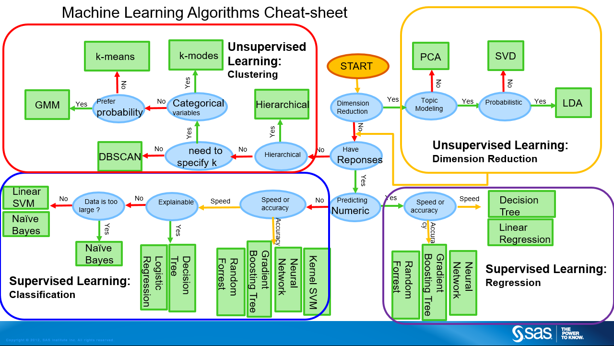
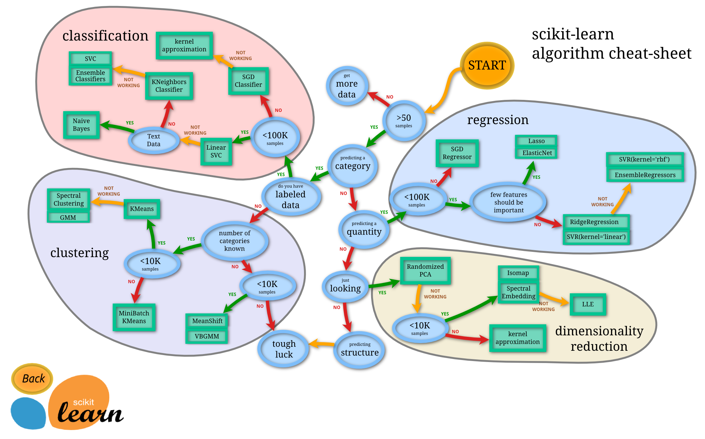
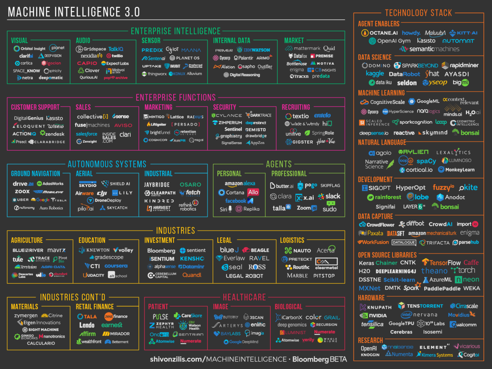
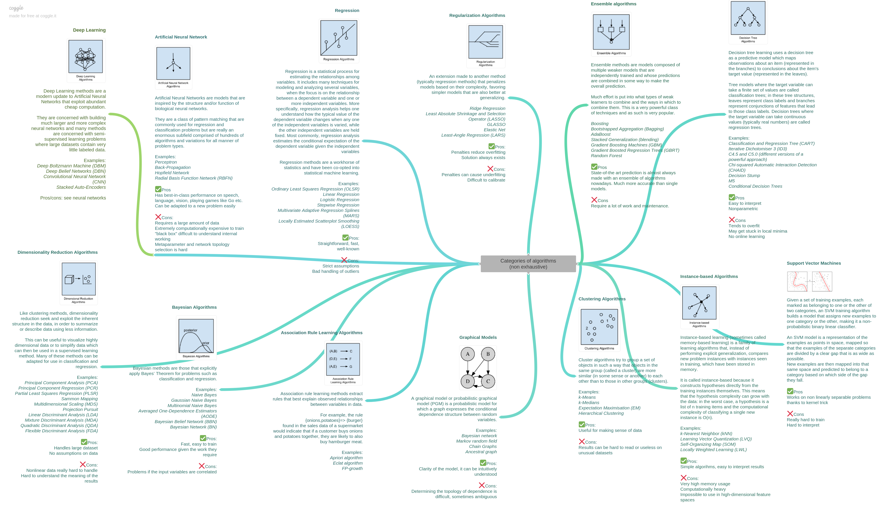
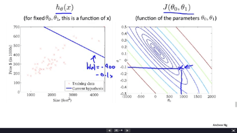
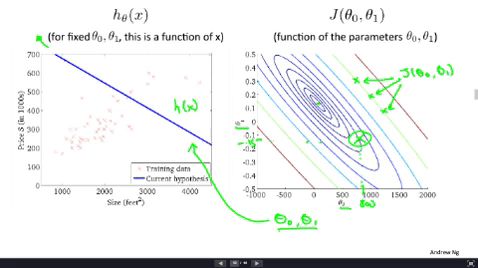

这是基于吴恩达《机器学习》课程的笔记第一部分（监督学习：线性回归、逻辑回归和环境安装），也包括其它一些可能的学习资源。
第二部分（监督学习2）传送门：Here。
第三部分（无监督学习）传送门：Here。
References
机器学习实战 基于Python的编程练习册
机器学习笔记2 面向软件的介绍手册
《动手学深度学习》 深度学习进阶
引言
机器学习的定义
Arthur Samuel（1959）
- 机器学习是：“在未详细编程的情况下赋予计算机学习能力“的研究领域
- 例：西洋棋程序
- 设计者本身并不精通西洋棋
- 例：西洋棋程序
- 机器学习是：“在未详细编程的情况下赋予计算机学习能力“的研究领域
Tom Mitchell（1998）
假设用指标P来评估计算机程序在某任务类T上的性能，若一个程序通过利用经验E在T中任务上获得了性能改善（P更优），则我们就称“关于T和P，该程序对E进行了学习”。（
迷之押韵）

机器学习的四大活跃应用领域：数据挖掘、计算机视觉、自然语言处理、智能决策。 （More）
机器学习比赛通常的处理步骤：数据预处理、特征工程、学习算法、模型集成。（More）
机器学习适合什么样的问题：
- 必须存在某种模式（Pattern），一个完全随机的问题是不可能学到东西的
- 复杂规则或定义，难以人工编程总结规律
- 必须有数据，这样学习机才有输入
模式在数学意义上即目标函数(Target Function)。
Learning Flow for Credit Approval:（机器学习流程图）

The Learning Model:（机器学习模型）

机器学习与数据挖掘：

机器学习与人工智能：

机器学习与统计学：

附：（一些术语）
模型：从数据中学得的结果/认识（联想），有时称“学习器”（learner）
演绎（deduction）：
- 从一般到特殊，特化（specialization）
归纳（induction）：
- 从特殊到一般，泛化（generalization）
- “从样例中学习”是一个归纳过程，因此称“归纳学习”（inductive learning）
- 概念学习：从训练数据中学得概念（concept），狭义的归纳学习
- 布尔概念学习：对“是”、“不是”的布尔目标概念的学习
- 概念学习：从训练数据中学得概念（concept），狭义的归纳学习
- “从样例中学习”是一个归纳过程，因此称“归纳学习”（inductive learning）
学习算法分类
- 监督学习（Supervised Learning）
- 人工引导
- 回归+分类
- 联想规则优选
- 无监督学习（Unsupervised Learning）
- 自主学习
- 聚类+降维
- 联想规则演绎
Others：强化学习、推荐系统……（重要主题：如何应用学习算法？Or 落地）
学习算法还可以按照输入/输出空间（特征、离散度）、数据标签（监督程度）、学习方式（主动性）等进行分类。如图：


Source: Hui Li, Which machine learning algorithm should I use?

Source: scikit-learn

Source: Shivon Zilis, MI-Landscape

Source: coggle

附：（一些术语）
样本空间（sample space）：特征（feature）所张成空间
训练集（training set）：由大量有特征的样本构成的集合，样本空间的子集
标记空间（label space）：由大量标记（label）构成的集合
假设空间（hypothesis space）：特征-标记的所有可能组合构成的空间
- 假设空间可以看作样本空间与标记空间的笛卡尔积生成的联想空间
版本空间（version space）：假设空间中，与训练集表现一致的子空间

由上图可以看出，版本空间中可能存在多个满足训练集的假设。
为了作出唯一的判断，必须引入归纳偏好（inductive bias）。
常用的归纳偏好：（算法的归纳偏好与问题的匹配度决定了算法的性能）
- 尽可能特殊
- 尽可能一般
- 奥卡姆剃刀（Occam’s razor）：若有多个假设，则选最简约的那个
监督学习
例1：（房屋价格预测）

给定房屋的面积，预测房屋的价格。
- 如何选用拟合函数？（线性、平方……）
$\longrightarrow$回归问题（Regression，连续值预测）。
例2：（癌肿瘤-恶/良分类）

给定【特征】肿瘤的大小（Size），
- 估算肿瘤的良性/恶性的概率？
- 预测可能是哪种类型的癌症？
多特征：（年龄+肿瘤大小）
$\longrightarrow$分类问题（Classification，离散值预测）
- 利用分类器画一条线，将两类点分离开
更多特征：肿块的厚度、细胞尺寸均匀度、细胞形状均匀度$…\infty…\longrightarrow$高维空间（支持向量机SVM）

无监督学习
例3：若我们将上文中有标记的数据变为无标记数据，如下图

$\longrightarrow$聚类问题（Clustering）
- 聚类的应用：
- 新闻分类
- 基因组：人种分类
- 分布式系统：协同分组
- 社交网络：朋友分组
- 市场：客户分配
- 天文学：星体分类
例4：（鸡尾酒会问题）

许多人同时说话。利用麦克风接收声音信号。如何过滤出每一个独立的声音源？
$\longrightarrow$降维问题（Dimensionality Reduction）
只须一行代码：（Octave，$\approx$开源版Matlab）
1 | [W,s,v] = svd ((repmat(sum(x.*x,1),size(x,1),1).*x)*x'); |
svd：奇异值分解，More
repmat：复制平铺，More提示：先使用Octave开发算法可能会更有效率！
线性回归
问题简述
回到之前的房屋价格预测问题：（监督学习-回归-单变量）
为了解决这个问题，我们将需要一个训练集（Training Set）：

解决的步骤如下：（$h$为假设函数，用于预测）

重点：如何表示假设$h$？
比如，可以采用线性函数拟合：（称为单个变量的线性回归）

附：（一些术语）
- 特征（feature）：$x_i$
- 比如，房屋的面积，卧室数量都算房屋的特征
- 特征向量（输入）：$x$
- 一套房屋的信息就算一个特征向量，特征向量由特征组成
- $x_j^{(i)}$ 表示第i个特征向量的第 j个特征
- 输出向量：$y$
- $y^{(i)} $表示了第 i 个输入所对应的输出（在训练集中给出）
- 假设（hypothesis）：也称为预测函数，比如一个线性预测函数是：
上式也称之为回归方程（regression equation），$θ$ 为回归系数。
线代基础
线性代数基础。有基础则跳过这一节。主要是是矩阵理论的基础知识。
More：线性到底是什么意思？
推荐教学视频：线性代数的本质。（2小时40分时长）
下为预览：
当然，对于微积分基础这里还有：微积分的本质系列。（约3小时时长）
BTW，贴一个无关但是很有创意的交互式视频：Here。
代价函数
不同的参数 $\theta$ 向量，将会对应不同的假设：

为了度量哪种假设更优，引入了代价函数（Cost Function）……

通常我们认为与训练集的误差是假设对应的代价。
误差越大，代价也越大。我们的目标是让代价尽量地小。
最常见的，我们通过最小均方（Least Mean Square）来描述误差：
（前面的系数$m$是样本容量，
系数2纯粹是为了求导方便）
矩阵形式为：（平方误差代价函数）
可视化的理解
我们对上文中的内容做一个总结：（考虑2个参数）

Cost代价函数将张成一个三维空间中的曲面：（凸函数）

我们可以想象，当$\theta_1和\theta_2$选取适当的值，可能有
即，两个不同的点取得同样的Cost函数值。这样具有相同Cost的点集就形成了等高线。
如下图：（相当于等高线的俯视）

梯度下降
显然，用等高线图人工去定位最优解很麻烦。我们希望可以让寻求代价函数最值的过程自动化。
通常使用梯度下降（Gradient Descent）来调参：
反复迭代上式直到收敛（Repeat untill convergence）。
$“:=”$是赋值符。
$\alpha$是迭代步长，又称学习速率/学习率（learning rate）。
- 过大的$\alpha$可能导致算法发散。
$\cfrac{\partial}{\partial\theta_j}J(\theta)$是导数项（derivative term）。
- 一般$\alpha>0$，对于导数项：+，为了下降应该反向走；-，同理。
因此，前式中采用了负号。- 对于平滑的极值点，在收敛的过程中，导数项一般会逐步减小，从而促进收敛。（证明）
推荐同时更新所有参数（Simultaneous update）。（More）

下面是一个梯度下降法的例子：

（图中显示了梯度下降收敛到极值的情况）
数学上，梯度方向是函数值下降最为剧烈的方向。
那么，任意赋一个初始起点，沿着$ J(\theta)$ 的梯度方向走，我们就能接近其最小值，或者极小值。梯度下降（Gradient Descent）不仅被用于线性回归，还被广泛应用于机器学习的众多领域。
应用到线性回归

我们将上图中代价函数（导数项）的具体表达式写出：
则 $\theta$ 的迭代过程为：（注意，赋值符）
对于多变量，该函数的推广矩阵（向量）表达如下：（注意，更换了正负号）
其中，推广代价函数如下：（令$x_0^{(i)}=1$）
最终实现的效果展示：

我们称该过程为基于最小均方（LMS）的批量梯度下降法（Batch Gradient Descent）。
- 一方面，该方法虽然可以收敛，但是每次调参都不得不遍历样本集，若样本的体积$m$很大，则开销巨大。
- 但另一方面，因为其可化解为向量型表示，所以就能利用到并行计算优化性能。
下面介绍实际中应用BGD时的一些技巧（Trick）。
特征缩放
$Idea$：确保不同的特征在同一尺度。
此时梯度下降法将相对更快地收敛。
实际上，由于$\alpha$是固定的，小尺度的特征将比大尺度的特征更为敏感。
- 但也提供了另一种思路：比如，对不同的特征按尺度设置不同的步长（构成$\alpha$向量），那么也能起到缩放的效果。则迭代公式变为：
例：（房屋的特征）
- $x_1=size\,(0-2000feet^2)$
- $x_2=number\,of\,bedrooms\;\;(1-5)$
注意到：房屋面积及卧室数量两个特征在数值上差异巨大。
如果直接将该样本送入训练，则代价函数的轮廓会是“扁长的”，在找到最优解前，梯度下降的过程不仅是曲折的，也是非常耗时的。

下面介绍特征缩放的几种方法。（More）
正态缩放
Standardization，缩放后的特征将服从标准正态分布：
μ,δ分别为对应特征$x$向量的均值和标准差。缩放后的特征将分布在 (−Inf,Inf) 区间。
区间缩放
Min-Max Scaling 又称为 Rescaling，区间缩放的公式为：
缩放后的特征将分布在 [0,1] 区间。
均态缩放
Mean normalization是区间缩放和正态缩放相结合的变种，其公式为：
μ为$x$向量的均值，缩放后的特征将分布在 (-1,1) 区间。
度量缩放
Scaling to unit length相对均态缩放，保留了更多原向量的面貌。其公式为：
缩放后的特征将分布在某个不定小区间。$||x||$是范数（Norm）。（More）
若取$||x||=|x|$绝对值，则缩放后的特征将分布在 [-1,1] 区间。
进行了特征缩放以后，代价函数的轮廓会是“偏圆”的，梯度下降过程更加笔直，性能因此也得到提升：

学习率
判断代价函数的收敛$\longrightarrow$可视化/设置阀值。（Dubugging？）
$\alpha>>$，学习率过大
- 可能不收敛，或者波动
- 当代价函数值上升/波动时，缩小学习率$\alpha$通常可以促进收敛
$\alpha<<$，学习率过小
- 收敛缓慢
如何选择$\alpha$？
在实际编程中，学习率可以以 3 倍，10 倍这样进行取值尝试：（双向）
多项式回归
我们已经知道，定义新的特征可能得到一个更好的模型。（更准确的刻画）
类似地，有了多项式回归（Polynominal regression）。
在线性回归中，我们通过如下假设函数来预测对应房屋面积的房价：
现在，我们可以考虑对房价特征 size 进行平方，获得一个基于 size 的新特征$size^2$：
这也是一个关于$size$的多项式。显然，我们得到的新特征与原特征是相关的。
如下图所示，这样的多项式回归得到了更好的拟合曲线。（蓝色线）

但我们也发现，在房屋面积足够大时，曲线反而出现了下沿，这意味着房价反而随着在房屋面积足够大时，与面积成反比，这有些失常。
进一步地，我们考虑加上三次方项目（上图绿色线）甚至替换二次方项为开方，得到如下两种预测：
由于我们所选的特征都是由size生成的，特征缩放变得更加重要。
在该例中，因为三次方项会带来很大的值，因此优先考虑采用了开方的预测函数（稳定放缓的增长）。
正规方程
前面论述的线性回归问题中，我们通过梯度下降法来求得$J(\theta)$的最小值，但是对于学习率的调节有时候使得我们非常恼火。为此，我们可通过正规方程来实现最小化。
对于一个多特征的代价函数
要想得到极值解，我们只须逐个偏导，等于0，得到一组方程
这是一个关于$\theta_0,\theta_1,…,\theta_m$的线性方程组，很容易用矩阵的算法解出。
例：（房屋价格预测问题，样本数m=4）

首先引入一个额外的特征变量$x_0$，其取值恒为1。据此建立一个特征矩阵X。y 为目标向量（预测）。
最终得到的矩阵算法如下：
1 | #例题的代码 |
推导和拓展：
之前的偏导方程组写成向量形式为（矩阵求导）
注意：（当X可逆能推出）$X\theta=y$。
什么时候会出现$X^TX$不可逆的现象？
- 冗余的特征（线性相关）
- 比如仅单位不同：x~!~=size in feet^2^,x~2~=size in m^2^。
- 过多的特征，$m\leq n$（训练样本数甚至没有特征多）
- 删去一些特征，或者使用正则化方法（Regularization）
下面是梯度下降与正规方程的对比：
| 梯度下降 | 正规方程 |
|---|---|
| 需要特征缩放，选学习率 $\alpha$ | 无需学习率和缩放 |
| 粗糙，多步迭代 | 精准，一步到位 |
| 超大量特征适应性较好，$O(n^2)$ | 平凡复杂度为 $O(n^3)$ |
| 能应用到一些更加复杂的算法中，如逻辑回归 | 对于更复杂的算法，该方法无法工作 |
注（复杂度认识）：普通计算机目前的计算速度大约是10^9/秒，如果n等于10000，则正规方程算法的计算量约10000^3=1000*10^9，即约需运行17分钟！而梯度下降法在正确运行时仅需10000^2=10^8，0.1秒！
注意梯度下降法的运行时间0.1s还需要乘以迭代次数，所以常系数较大，大约也在分钟量级。
若我们采用矩阵相乘的优化算法解正规方程，目前最低可降到$O(n^{2.376})$。
可以在Here查询更多算法的复杂度。
Logistic回归
分类与逻辑
Classification problems：【分类问题】
- Email: Span / Not Span?
- Online Transactions(交易): Fraudulent(欺诈) Yes / No?
- Tumor(肿瘤): Malignant(恶) / Benign(良)?
利用线性回归中的预测函数$h_\theta (x)$，我们可以定义一个分段函数来完成上述肿瘤问题的 0/1 分类（二分类）：
下面两幅图展示了线性预测。
在第一幅图中，拟合曲线成功的区分了 0、1 两类。

在第二幅图中，如果我们新增了一个(异常)输入（右上的 X 所示），此时拟合曲线发生变化，由第一幅图中的紫色线旋转到第二幅图的蓝色线，导致本应被视作 1 类的 X 被误分为了 0 类。

显然，这样的分类效果并不好。（Most of time you just get lucky.）
注意，是效果不好，并不代表线性回归不能用于分类。
由于异常值的影响大，$h_\theta(x)$的预测值波动性很强，很难自动找到一个(通用性)好的分段点。
假设函数
联系实际，我们更想实现一个有限、可控的预测函数：（比如，预测值被放缩到 [0,1] 区间中）
为了实现这个，我们只须定义一个转换器 $g$——Sigmoid Function（Logistic funciton）：
这里的$h_\theta(x) =\theta^Tx$实际就是线性回归中的预测函数（
忘了可以复习一下），我们通过转换器g，生成了一个新的预测函数。回顾特征缩放的部分，你还可以看到转换器g的作用与特征缩放函数几乎是一致的。你甚至可以认为它就是一种度量缩放（将预测距离缩放为逻辑距离）。（模糊逻辑）总结：线性回归预测的是(线性)距离，逻辑回归预测的是逻辑距离。【无限度量 vs. 有限度量】
（线性回归预测函数的理论取值范围为整个实数轴。逻辑距离显然更适合于分类问题，它表现为概率）
下为Sig函数的形状：

决策边界
仅仅做一个Sig函数的变换，并不足以很好地诠释Logistic回归对解决分类问题的优势。
我们下面将看到，Sig函数实际将预测函数延伸为一个(合理的)分类器。
决策边界（Decision Boundary）：
- 将一个高维空间分成两个部分的(超)曲面（为分类/决策提供依据）。（More）
根据Sig函数确定新的分段函数：（尽管形式上与之前一致，但可认为$h_\theta(x)=P(y=1|x,\theta)$代表概率）
考虑到Sig函数的性质，上式其实是将线性预测函数$\theta^Tx$按0点分段。即
显然，对于$\theta^Tx=0$，它代表了一个(超)空间中的(超)曲面。这就是决策边界。
原先在线性回归中用于拟合数据点的预测函数，现在被视作了两个子空间的边界函数。
总结：线性回归是空间内部的拟合（新事物应该在哪？），逻辑回归是空间边界的拟合（新事物应该属于哪边？）。但无论是内部还是边界，其本质都是空间，故表现形式是一致的。
由此，线性回归生成的拟合空间与样本空间同维，而逻辑回归的拟合空间比样本空间少1维。
例：（线性决策边界）

假设我们已经求得了$\theta$参数，即决策边界$\theta^Tx = 0$已经确定，如上图所示。
则，当$\theta^Tx>0$，模型将预测结果为1，反之依然。
例：（非线性决策边界）

我们可以使用在线性回归中构造特征多项式的方法来拟合上图中的非线性的决策边界。
比如：上图中的决策边界是$x_1^2+x_2^2-1=0$。（参数的确定将在之后介绍）
你可以采用更复杂的高阶特征：
并获得更复杂的边界曲线。
下节将介绍如何自动化地（automatically）选择参数$\theta$。这样，给定一个训练集，算法将能自动地拟合参数。
代价函数
我们已经知道Linear Regression的代价函数：【最小均方】
若我们直接在上式中代入逻辑回归中的预测，那么其图像将是非凸的（如下图左），很难确定极值。
我们希望有一个凸的代价函数（如下图右），这样我们就能利用梯度下降，并确保找到全局最优。

于是我们定义了一个新的代价/误差函数
其中
你可以看到，这样的Cost定义将会使得预测正确时代价较小，预测错误时则代价激增。（凸优化，More）

由于我们知道标记y取值是布尔值(0/1)，Cost的表达式可以整合简化为
熟悉信息论的朋友可能会注意到，Cost函数长得很像信息熵。（准确地讲，交叉熵）
交叉熵衡量了真实值y和假设h两个分布的差异度，即“假设的不准程度”的度量。
More：最大熵原理，应用信息论基础，Logistic 回归的三个视角（极大似然估计/熵/形式化损失函数）。
应用梯度下降，求得偏导项为：（More）
一个简化的求导过程示意如下：（把所有的张量都当作标量处理）
则参数 $\theta$ 的迭代过程为
矩阵形式为：
注意，尽管Logistic回归的迭代公式与线性回归在形式上相似，但两者假设函数$h_\theta(x^{(i)})$是不一致的！（当然，标记y也不一致）下图是我绘制的一个两种方法的效果比较示意图：（可以点开大图查看）

高级优化算法
除了(批量)梯度下降（BGD）算法之外，实际还有一些更高级的优化算法：
- 共轭梯度法（Conjugate gradient）
- BFGS
- L-BFGS
它们具有一些优点但同时在实现上更复杂（不要反复造轮子）：
- 无须人工选取学习率$\alpha$
- 通常比梯度下降更快（
much faster）
例：（优化下列给定代价函数的参数）
Octave代码如下：（利用高级优化算法）
1 | addpath(pwd); #将当前目录加入搜索路径（避免函数查询不到） |
尽管更难调试这样的代码，但这些算法的效率通常相当不错。
对于大规模的学习问题，这也许是个好选择。
多元分类
Multiclass Classification：
- Email foldering/tagging: Work, Friends, Family, Hobby（邮件分类）
- Medical diagrams: Not ill, Clod, Flu（医疗诊断）
- Weather: Sunny, Cloudy, Rain, Snow（天气分类）
通常采用 One-vs-All，亦称 One-vs-the Rest 方法来实现多分类，其将多分类问题转化为了多次二分类问题。
假定完成 K 个分类，One-vs-All 的执行过程如下：
轮流选中某一类型 i ，将其视为正样本，即 “1” 分类，剩下样本都看做是负样本，即 “0” 分类
训练多个逻辑回归模型，分别得到参数向量 $θ^{(1)},θ^{(2)},…,θ^{(K)}$
- 总计 K 个决策边界$h_θ^{(k)}(x)$（分类器，Classifier）

给定输入 x，为确定其分类，分别计算分类器 $h_θ^{(k)}(x),k=1,…,K$的值。
我们取预测值最大的那一个分类器的结果作为最可信的结果，即最后的分类结果。
思考：事实上，当类别过多时（通常每一类的样本相对少，样本分布相对密集）分类器的形式可能会相当复杂。不如将每一类当作一个样本，使用聚类算法先找出大类，然后使用逻辑回归，可能更好。
正则化
过拟合
- 欠拟合（underfitting）：拟合程度不高，数据距离拟合曲线较远，如下左图所示。
- 过拟合（overfitting）：过度拟合，貌似拟合几乎每一个数据，但是丢失了信息规律，如下右图所示，房价随着房屋面积的增加反而降低了。
线性回归中为了解决欠拟合和过拟合问题，可以引入局部加权线性回归（Locally Weight Linear Regression）。即对每一个要预测的输入x，赋予 x 周围点不同的权值（核，一般采用高斯分布），距离 x 越近，权重越高。LWLR 属于非参数（non-parametric）学习算法，每进行一次预测，就需要重新进行训练。（LWLR 补充自机器学习实战一书，P141-第8章-8.2）
如下图所示：（分别对应：欠拟合，适当，过拟合）


过拟合时，尽管高度符合数据集，却失去了泛化（generalization）能力。
对于过拟合（Overfitting），通常有两种选择：
- 减少特征数。
- 人为地选择一些重要的特征。
或：应用模型选择算法（Model selection algorithm），自动完成选择过程。
显然这只是权宜之计，因为特征意味着信息，放弃特征也就等同于丢弃信息，要知道，特征的获取往往也是艰苦卓绝的。
- 人为地选择一些重要的特征。
- 正则化（Regularization）。
- 保留特征，但降低参数的绝对大小，拉伸曲线使之更加平滑以解决过拟合问题。
通常要弱化一些高阶项（曲线复杂的主要因素）。由于高阶项中的特征 x 无法更改——特征是无法弱化的，能弱化的只有高阶项中的系数 θi（类似LWLR的加权因子）。我们把这种弱化称之为是对参数 θ 的惩罚（penalize）。Regularization（正规化）正是完成这样一种惩罚的“侩子手”。
- 保留特征，但降低参数的绝对大小，拉伸曲线使之更加平滑以解决过拟合问题。
思考：我们知道高次方程失真还有诸如：龙格现象、吉布斯现象等。有一种做法（样条线）是使用低次多项式分段拟合（也就是局部拟合），只要在边界上满足可导条件即可。这似乎也可以用来解决过拟合问题，甚至是一种比LWLR更好的方法（不需要反复训练）。
例：

在附加1000倍的 θ3 及 θ4 二次项之后，代价函数的优化将趋于将 θ3 及 θ4 减小（惩罚）到趋近于 0，原本过拟合的曲线(蓝色线)就变得更加平滑(紫色线)，趋近于一条二次曲线（在本例中，二次曲线显然更能反映住房面积和房价的关系）——一个simpler的假设，也就能够更好的根据住房面积来预测房价。要知道，预测才是我们的最终目的，而非拟合。
线性回归正则
对于更多的特征，通用的做法如下
若正则因子$\lambda$选取得过大，那么曲线可能退化，反而欠拟合。因此需要选取合适的正则因子。（这也将会有自动化的算法）
梯度下降也要相应调整：
其中（F）式等价于
通常$“1-\alpha\frac{ {\color{red}\lambda} }{\color{blue}m}”$非常接近于1（约0.99…），除开这一项系数以外，其它部分与原梯度下降公式没有区别。梯度下降中每次更新 θ，同时也会去稍微减小 θ 值，达到了 Regularization 的目的。
若采用使用正规方程进行优化，则使 J(θ) 最小化的 θ 值为：（m样本数，n特征数）
正则化还能解决$X^TX$不可逆的问题
- 例如，当$m\leq n$时……
如果我们有正则因子$\lambda>0$（严格大于0），则
逻辑回归正则
类似地，代价函数修正：
梯度下降：（假设函数为$h_\theta(x) ={\cfrac{1}{1+e^{-\theta x} } }$）
高级优化算法：
1 | addpath(pwd); |
环境安装与使用
可以边学边装，不着急部署环境。
Octave/Matlab
Pre：关于Octave和Matlab的区别。（精简、开源、抽象、慢……）
（
已经装了Matlab可以跳过这里）《机器学习》官方说明如下：

安装Octave框架：
进入主页
下载、安装即可。（操作手册）
Octave 教程：
基础语法
基本运算
1 | #四则运算 |
数据管理
1 | A = [1 2; 3 4; 5 6] |
矩阵操作
1 | #善用help命令 |
可视化
1 | t = [0:0.01:0.98]; |
函数控制
1 | #for。貌似加了自动补全功能 |
向量思维
Octave或Matlab，以及其它的软件通常由高度优化过的线性代数模块。因此应该利用这些优势，称为向量化（Vectorization）思维。
例如：
批量、高效地操作线性元素！
下面先定义两个 1000 维的向量。（《动手学深度学习》）
1 | In [1]: |
向量相加的一种方法是，将这两个向量按元素逐一做标量加法：
1 | In [2]: |
向量相加的另一种方法是，将这两个向量直接做矢量加法：
1 | In [3]: |
结果很明显，后者比前者更省时。因此，我们应该尽可能采用矢量计算，以提升计算效率。
Python
Python3安装，可直接采用Anaconda集成环境。主要基于其组件Numpy。
TensorFlow
安装Tensorflow框架：（CPU版本，More）
1 | pip install tensorflow |
测试代码：（运行可用python自带的idle，Anaconda自带的Jupyter，或者SublimeText等编辑器）
1 | import tensorflow as tf |
可能会遇到的坑：
C++/Java
更快更好更累的不二之选：C++/Java。（Sublime Text）
大数据在线竞赛
想要查看我的比赛练习，请转Here。
一些竞赛频道：Kaggle，DataCastle，KDDCUP，天池，Sofasofa……
BUG记录
- 解决方案1：因为目前只在公式标红中偶尔出现，故可以在“} }”中加1空格，
意会即可orz。（More）- 快速解决方案：用TXT格式打开，用“{ {”全部替换，用“} }”全部替换。（可能要替换多次）
- 解决方案2：Here
Markdown公式偶尔在网页上渲染失败
- 解决方案：公式color上色时应该严格遵循语法，前后项都要加括号